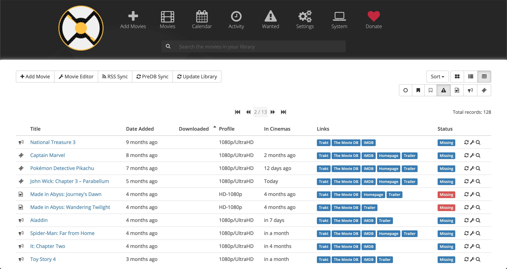

De doelstelling voor deze activiteit was het documenteren van de set-up. Dit omdat de installatie al af was. Mijn eigen doelstellingen voor deze activiteit waren; het beter leren documenteren en mijn technische kennis uitdiepen.
Geautomatiseerde mediaserver
Al twee jaar heb ik een eigen Plex-server. Dit is een soort van zelfgehoste Netflix of Hulu. Hier probeer ik constant nieuwe dingen op uit.

Doelstellingen
Verslag
Mijn taak voor deze opdracht was een documentatie schrijven over mijn mediaserver. Uiteindelijk is dit een 31 pagina lang document geworden met iets minder dan 5000 woorden. Toen ik een half jaar geleden begon aan mijn mediaserver dacht ik niet dat ik dit zoveel zou uitbreiden. Ik ben begonnen met Plex en heb daarna allemaal kleine deeltjes toegevoegd met de gedachte: “Dit kan makkelijker”. Om een voorbeeld te geven downloadde ik al mijn ondertitels manueel. Alles wat ik manueel doe kan dus ook worden geautomatiseerd en dat heb ik dan ook gedaan. Het eindresultaat dat ik nu ben bekomen kan ook weer geautomatiseerd worden door bijvoorbeeld een pagina te maken voor Sonarr en Radarr samen.
Ik ben dus tot de conclusie gekomen dat automatisatie nooit stopt. Alles kan altijd makkelijker. Verder heb ik ook veel nieuwe technologieën geleerd en uitgeprobeerd. Dit staat niet allemaal in de documentatie omdat ik een groot deel hiervan nog wel heb maar al is vervangen. Vaak omdat ik een beter alternatief heb gevonden. Ik heb me ook veel met de security beziggehouden aangezien ik veel data download en niet iedereen hoeft te zien welke data dit is.
Verder ben ik nog iedere dag bezig om indringers buiten te houden door te zoeken naar manieren hoe zij precies binnen zouden kunnen komen. Ik heb hierdoor al veel gaten kunnen dichten. Een voorbeeld hiervan is via SSH brute force. Ik heb hiervoor dan ook fail2ban geïnstalleerd en overal private key login geforceerd. Verder heb ik ook om remote access te krijgen een “tussenserver” gemaakt. Als deze gehackt zou worden is niet d irect mijn hele systeem gehackt maar alleen die host. Vanuit een security perspectief heb ik dus geleerd dat je niet moet denken ‘hoe zou een indringer hier kunnen binnendringen?’ maar eerder ‘hoe zou ik hier kunnen binnen dringen?’. Op deze manier vind je veel meer gaten en leer je ook nog een paar hacking technieken. Aangezien dit geheel ook een beetje mijn hobby is ben ik heel blij om dit later ook als werk te kunnen doen en nu dan ook als i-talent opdracht!
Onderstaand zijn een paar recente foto’s met uitleg:
In de bovenstaande afbeelding is een catalogus van films die je kunt afspelen weergegeven. Als er op een afbeelding wordt geklikt volgt een korte beschrijving over de inhoud en kan eventueel een trailer worden afgespeeld. Een oranje driehoekje bovenaan de film houdt bij of je die al hebt gezien. Voor series geldt hetzelfde principe.

Hierboven wordt gevisualiseerd hoe de automatisatiesoftware eruitziet. Er zit natuurlijk veel meer achter dan deze simpele interface maar dit kan gezien worden als het eindresultaat. Wanneer een film beschikbaar is wordt deze automatisch gedownload en toegevoegd aan Plex. Films kunnen worden toegevoegd met de knop “Add Movie”. Tussen het indienen van de opdracht en het maken van het portfolio heb ik natuurlijk een aantal dingen veranderd aan mijn set-up. Een voorbeeld hiervan is dat nieuwe media nu wordt geüpload en gestreamd van Google Drive. Zo heb ik “ongelimiteerde” opslag.
Reflectie
Aangezien ik deze opdracht heb uitgevoerd in de loop van een half jaar is deze in kleine delen tot stand gekomen en langzaam uitgebreid. Ik ben begonnen met alleen Plex op een server met Ubuntu 16.04. Aangezien dit niet zo praktisch werkte en niet zo stabiel was heb ik dit daarna omgezet naar Windows Server 2012 R2 Datacenter. Ik heb deze set-up langzaam uitgebreid naar een volledig geautomatiseerd systeem. Ik ben vaak problemen tegengekomen en heb deze met behulp van Google opgelost. Hier heb ik veel van geleerd.
Toen ik aan deze opdracht begon wist ik nog niks van Powershell, ik heb dit dan ook snel onder de knie gekregen zodat ik meer kon automatiseren. Ik heb vooral geleerd dat je automatisatie naar het oneindige kan doortrekken. Het einddoel is dus altijd een knopje waar je niet meer op moet drukken.
Er zijn verder enorm veel technologieën die ik nog niet eens heb bekeken en die zeker de moeite waard zijn. Security en troubleshooting komen verder overal bij voor. Ik ben dus ook heel blij dat ik deze technieken veel beter onder de knie heb gekregen maar er is altijd meer om te leren. Ik heb deze opdracht geselecteerd voor mijn portfolio omdat de technieken die hierin voorkwamen bijna overal toepasbaar zijn in een SNB job. Mijn zwakke punt was het documenteren van de opdracht. Dit is uiteindelijk wel goed gekomen, vandaar dat ik ook mijn i-talent uren heb gekregen. Een werkpunt is om de zinsbouw en spelling beter te doen. Hier heb ik tijdens het maken van het portfolio meer moeite in gestoken.